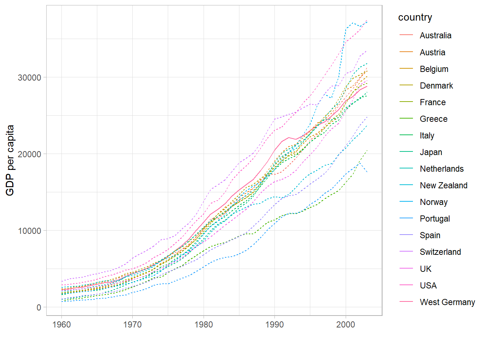
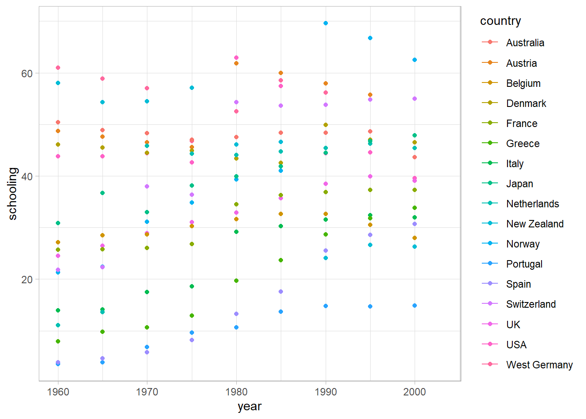
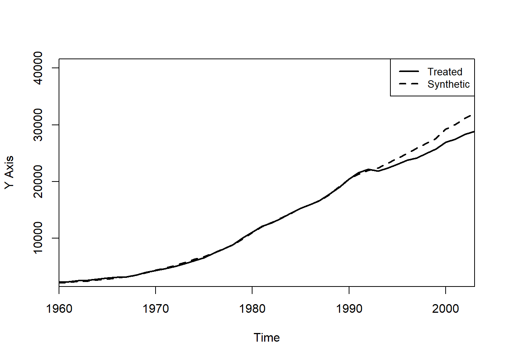
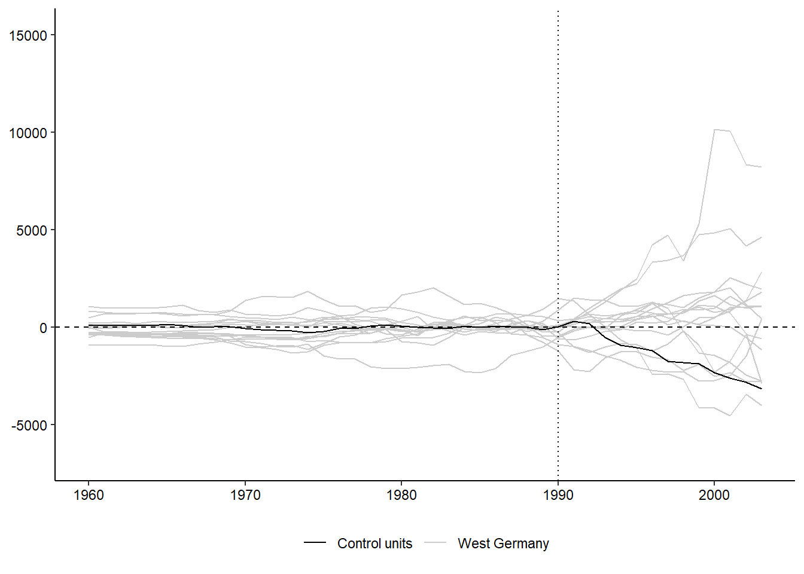
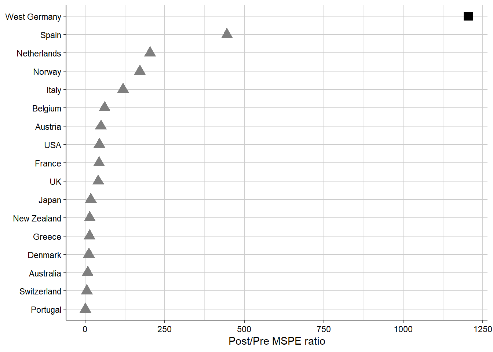
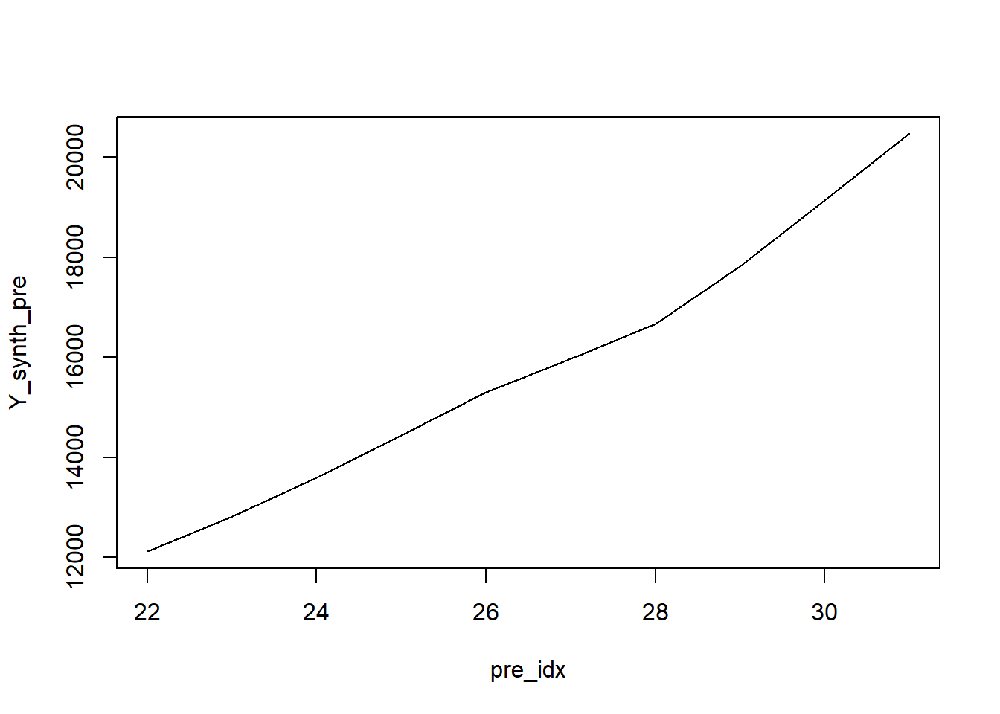
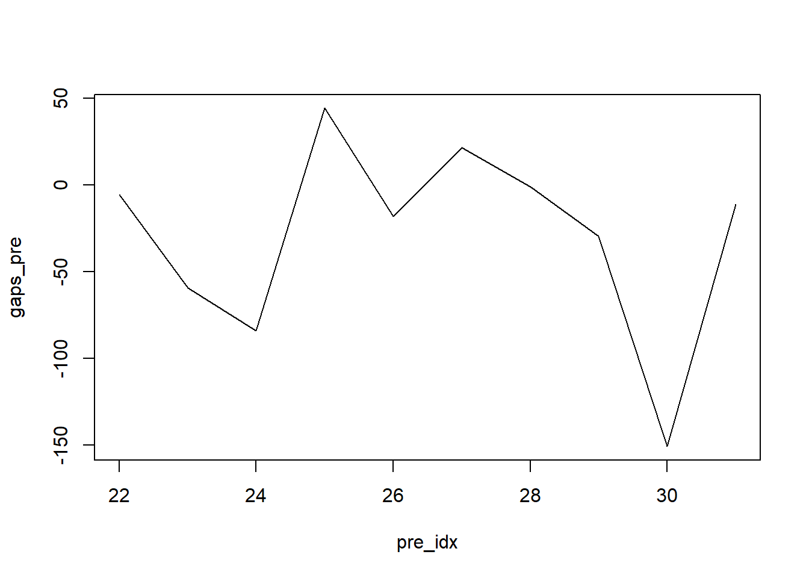

library(Synth) ##
## Synth Package: Implements Synthetic Control Methods.## See https://web.stanford.edu/~jhain/synthpage.html for additional information.library(SCtools)Loading required package: futureSynthetic control method (SCM)
Selles peatükis käsitleme sünteetilise võrdlusobjekti meetodit (synthetic control method), mis on välja töötatud olukordadeks, kus meid huvitab ühe konkreetse agregeeritud objekti – näiteks riigi, regiooni või linna – kokkupuude mingi poliitika või sündmusega ning soovime hinnata selle mõju. Erinevalt klassikalisest erinevuste-vahe (dif-dif) lähenemisest, kus on palju meetmes osalejaid ja kontrollüksusi, on sünteetilise kontrolli meetodi fookuses sageli olukord, kus reaalselt on vaid üks meetmes osalev objekt ja piiratud arv sobivaid võrdlusobjekte.
Motivatsioon tuleneb tüüpilistest poliitikaküsimustest: mis oli Saksamaa taasühinemise mõju Lääne-Saksamaa majanduskasvule, milline oli California ulatusliku tubakakontrolliprogrammi mõju suitsetamisele või kuidas mõjutas Eesti kogumispensioni vabatahtlikuks muutmine majapidamiste tarbimist ja säästmist. Nendele küsimustele vastamiseks ei piisa sageli üksiku võrdlusriigi või -regiooni valimisest, sest subjektiivne valik võib kallutada tulemusi. Sünteetilise kontrolli meetod pakub süsteemse viisi sellise „võrdlusobjekti” konstrueerimiseks.
Empiirilises kirjanduses seostatakse sünteetilise kontrolli meetodit eelkõige Abadie ja kaastööliste töödega. Esimene tuntud rakendus on Abadie ja Gardeazabal (2003), kus hinnatakse Baskimaa konflikti majanduslikku hinda võrreldes sünteetiliselt konstrueeritud kontrollpiirkonnaga, mis on kaalutud kombinatsioon Hispaania teistest provintsidest. Abadie, Diamond ja Hainmueller (2010) meetodit California tubakakontrolliprogrammi mõjude hindamiseks ja Abadie, Diamond ja Hainmueller (2014) Saksamaa taasühinemise mõjude analüüsimiseks, konstrueerides Lääne-Saksamaale võrdluseks sünteetilise OECD riikide kombinatsiooni.
Eestis on meetodit kasutatud näiteks Centari analüüsis, kus hinnati lapsehoiu ja alushariduse projektide mõju koolieelsetes lasteasutustes käivate laste osakaalule ja naiste tööhõivele, moodustades sekkumispiirkondadele sobivad sünteetilised kontrollpiirkonnad. Samuti kasutab Meriküll (2025) sünteetilise dif-dif lähenemist, et hinnata, kuidas kogumispensioni varasem vabatahtlikuks muutmine mõjutas Eesti majapidamiste finantskäitumist ja inflatsiooni, võrreldes Eestit riikidega, kus sellist reformi ei olnud.
Need näited illustreerivad, et sünteetilise kontrolli meetod on kasulik just siis, kui mõjutatud üksusi on vähe ja me soovime vältida ad hoc ühe võrdlusriigi või -piirkonna valikut.
Olgu meil \(J + 1\) agregeeritud objekti: üks käsitletav objekt (näiteks California või Baskimaa) ning \(J\) potentsiaalset kontrollobjekti (doonorgrupp). Ajalist dimensiooni tähistame perioodidega \(t = 1, \dots, T\), kus sekkumine toimub alates ajast \(T_0 + 1\). Perioodid \(t \leq T_0\) on sekkumiseelsed, perioodid \(t > T_0\) sekkumisjärgsed.
Olgu \(Y_{it}\) objekt \(i\) tegelik tulemusmuutuja (näiteks sigarettide müük elaniku kohta) perioodil \(t\). Huvipakkuv on sekkumise mõju käsitletavale üksusele \(i = 1\), mida defineerime kui vahe tegeliku tulemuse ja kontrafaktuaalse tulemuse vahel:
\[ \alpha_{1t} = Y_{1t}^{I} - Y_{1t}^{N}, \quad t > T_0, \]
kus \(Y_{1t}^{I}\) on tulemus sekkumisega (täheldatav) ning \(Y_{1t}^{N}\) oleks tulemus ilma sekkumiseta (võrdlusseisund), mida otseselt ei näe.
Sünteetilise kontrolli idee seisneb selles, et võrdlusseisundi aegrida \(Y_{1t}^{N}\) konstrueeritakse kontrollobjektide kaalutud keskmisena:
\[ Y\_{1t}\^{N} \approx \sum*{j=2}\^{J+1} w_j Y*{jt}, \quad t = 1, \dots, T, \]
kus kaalud \(w_j \geq 0\) ja \(\sum_{j=2}^{J+1} w_j = 1\). Need kaalud määravad „sünteetilise kontrolli”, ehk hüpoteetilise objekti, mis on kombinatsioon olemasolevatest võrdlusüksustest ja mille sekkumiseelse dünaamika soovime sobitada käsitletava objektiga võimalikult täpselt.
Sellisel juhul on mõju hinnang ajapunktis \(t > T_0\):
\[ \hat{\alpha}*{1t} = Y*{1t} - \sum\_{j=2}\^{J+1} \hat{w}*j Y*{jt}. \]
Graafiliselt saame võrrelda käsitletava objekti tegelikku rada ning sünteetilise kontrolli rada, ning sekkumisejärgne erinevus nende vahel annab visuaalse ja kvantitatiivse hinnangu sekkumise mõjust.
Lisaks tulemusmuutujale kasutab meetod sobitamiseks selgitavaid tunnuseid ja sekkumiseelseid tulemusi. Olgu \(X_1\) vektor käsitletava objekti tunnustest ja sekkumiseelsete tulemuste kokkuvõtlikest näitajatest (näiteks keskmised väärtused), ning \(X_0\) maatriks samade tunnuste kohta kontrollobjektide jaoks:
$$ X_1 = (x_{11}, , x_{1K})’, X_0 =
\[\begin{pmatrix} x_{21} & \dots & x_{J+1,1} \\ \vdots & \ddots & \vdots \\ x_{2K} & \dots & x_{J+1,K} \end{pmatrix}\]$$
Lisaks kaaludele objektidele \(w = (w_2, \dots, w_{J+1})'\) kasutatakse ka kaalusid tunnustele \(V\), mis on diagonaalmaatriks suhtelise olulisusega tunnuste vahel. Intuitsioon on, et mõni tunnus – näiteks sekkumiseelsed tulemused – võib olla eriti informatiivne tulevase tulemuse kohta ning seetõttu saab suurema kaalu.
Kaalud valitakse nii, et sobitada käsitletava objekti tunnused võimalikult hästi sünteetilisele kontrollile, minimeerides sobituskao:
\[ \min\_{w} (X_1 - X_0 w)' V (X_1 - X_0 w) \]
võttes arvesse tingimusi \(w_j \geq 0\) ja \(\sum_j w_j = 1\). See miinimumväärtus ongi nn W-kaotus (W-loss), mis näitab, kui hästi suudame valitud \(V\) korral sobitada selgitavad tunnused.
Seejärel valitakse \(V\) nii, et minimeerida sekkumiseelsel perioodil sünteetilise kontrolli prognoosivea ruutkeskmine, ehk sekkumiseelne ruutkeskmine prognoosiviga (MSPE, Root Mean Square Prediction Error). See on seotud nn V-kaotusega (V-loss), ehk sellega, kui hästi sekkumiseelse väljundi rada on käsitletava objekti ja sünteetilise kontrolli vahel ühtiv.
Üks klassikaline sünteetilise kontrolli näide on California tubakakontrolli programmi – Proposition 99 – mõju analüüs. Tegemist oli 1988. aastal vastuvõetud seadusandliku paketiga, mis tõstis sigarettide aktsiisi 25 sendi võrra paki kohta ja suurendas makse ka teistele tubakatoodetele. Osa maksutulust suunati ulatusliku tubakakontrolli programmi rahastamiseks, mille eesmärk oli vähendada suitsetamist ning parandada rahvatervist.
Paneelandmestik sisaldab 39 USA osariigi andmeid perioodil 1970–2000. California puhul võeti 1988. aastat kui sekkumishetke, seega sekkumiseelne periood hõlmab aastaid 1970–1988. Sünteetiline kontroll konstrueeriti kaalutud kombinatsioonina teistest osariikidest, kus sarnane tubakakontrolli programm puudus. Sobitamisel kasutati mitmeid selgitavaid tunnuseid, näiteks elaniku kohta arvutatavat sissetulekut, sigarettide hinda, vanuselist struktuuri ning varasemate erimaksudega seotud näitajaid.
Kaalud selgitavad, kui suure panuse annab iga doonor-osariik sünteetilise California moodustamisse. Samuti määratakse tunnuste kaalud \(V\), mis peegeldavad, millised tunnused on prognoosivõime seisukohast kõige olulisemad.
Joonis kujutab California sigarettide müüki elaniku kohta koos sünteetilise kontrolli müügiga. Sekkumiseelsel perioodil peaksid need kaks aegrida olema üksteisele väga lähedal, mis kinnitab sobituse headust. Pärast sekkumist ilmneb järkjärguline lahknemine, mis näitab tubakakontrolliprogrammi mõju.
Sünteetilise kontrolli meetodi korrektne tõlgendamine põhineb mitmel olulisel eeldusegrupil.
Esimene eeldus puudutab vastastikmõjusid ehk üldise tasakaalumõju puudumist. Eeldame, et sekkumine käsitletaval objektil ei mõjuta otseselt kontrollobjektide tulemusi. Näiteks Baskimaa konflikti analüüsis eeldatakse, et konflikt ei mõjuta teiste Hispaania regioonide majanduskasvu. Teine näide oleks Eesti ettevõtte tulumaksumäära langetus, mille puhul eeldaksime, et see ei mõjuta naaberriikide ettevõtete majandusnäitajaid. See on sarnane SUTVA eeldusest tuntud nõudega, et ühe üksuse osalemine meetmes ei mõjuta teise üksuse tulemust.
Kui see eeldus ei kehti ja sekkumine „lekib” kontrollüksustesse, siis sünteetiline kontroll ei esinda enam korralikult võrdlusseisundit ilma sekkumiseta.
Teine oluliste eelduste rühm puudutab dünaamikat sekkumiseelsel perioodil. Nõuame, et kontrollgrupi tulemusi mõjutab sama struktuurne protsess, mis käsitletavat üksust, ning nii uuritav objekt kui ka kontrollüksused alluvad sarnastele šokkidele. See on analoog paralleelsete trendide eeldusele erinevuste vahe (dif-dif) meetodi puhul, kuid sünteetilise kontrolli korral kontrollime seda sobitamise abil.
Mida rohkem on sekkumiseelseid perioode, seda paremini on võimalik kontrollida nii vaadeldavate kui ka mittevaadeldavate tegurite mõju. Kui suudame sekkumiseelsel perioodil väga täpselt sobitada nii selgitavad tunnused kui ka tulemuste dünaamika, siis on usutav, et sama suhe püsib ka sekkumisjärgsel perioodil.
Selleks, et veenda lugejat, et leitud tulemused ei ole juhuslikud, kasutatakse sünteetilise kontrolli kontekstis sageli platseeboanalüüse ja RMSPE-suhetega teste.
Platseeboanalüüsi põhiidee seisneb selles, et rakendame sünteetilise kontrolli meetodit mitte ainult käsitletavale üksusele, vaid ka igale doonorgrupi üksusele. Iga kontrollüksuse jaoks konstrueerime sünteetilise versiooni, kasutades ülejäänud üksusi doonorina, ning „teeskleme”, et sekkumine toimus samal ajal ka selles kontrollüksuses.
Iga kontrollüksuse puhul võrdleme sekkumisjärgsel perioodil tegelikku tulemust selle sünteetilise kontrolliga. Kui tegelikult mingit mõju ei olnud, peaks nende kahe aegrea vahe jääma väikeseks ning olema sekkumiseelse perioodiga võrreldav. See loob nulljaotuse, millega saame võrrelda käsitletava üksuse kõrvalekallet.
Visuaalselt võime joonistada kõikide üksuste (käsitletava ja platseebode) trajektoorid ning nende erinevuse sünteetilisest kontrollist. Kui käsitletava üksuse kõrvalekalle on selgelt suurem kui enamikul platseebodel, viitab see tõsiseltvõetavale sekkumise efektile.
Platseeboanalüüsi saab kvantifitseerida ruutkeskmise prognoosivea suhete kaudu. Olgu käsitletava või platseebos üksuse korral:
\[ \text{RMSPE}\_{\text{pre}} = \sqrt{\frac{1}{T_0} \sum_{t=1}^{T_0} (Y_{it} - Y_{it}^{\text{SC}})^2}, \]
\[ \text{RMSPE}\_{\text{post}} = \sqrt{\frac{1}{T - T_0} \sum_{t=T_0+1}^{T} (Y_{it} - Y_{it}^{\text{SC}})^2}, \]
kus \(Y_{it}^{\text{SC}}\) on sünteetilise kontrolli tulemus. Seejärel defineerime suhte:
\[ R_i = \frac{\text{RMSPE}_{\text{post}}}{\text{RMSPE}_{\text{pre}}}\]
Suhe \(R_i\) suurem kui 1 viitab sellele, et sekkumisjärgne sobivus on halvem võrreldes sekkumiseelsega, ning suurem suhtarv tähendab suuremat eeldatavat sekkumise mõju. Arvutame selle suhte nii käsitletava üksuse kui ka kõikide platseebode jaoks ning järjestame need kahanevas järjekorras. Käsitletava üksuse positsioon selles jaotuses annabki täpse p-väärtuse:
\[ p = \frac{\#\{i : R_i \geq R_{\text{treated}}\}}{\text{kõigi üksuste arv}}. \]
California näites oli käsitletava üksuse (California) suhe kõige suurem kõigi osariikide seas, mis andis p-väärtuseks ligikaudu \(1/38 \approx 0{,}026\). See tähendab, et vaid ühel juhul 38-st võiksime oodata vähemalt sama suurt kõrvalekallet, kui mõju tegelikult ei oleks.
Kui kaalud \(w\) ja \(V\) on õigesti valitud, saavutatakse tasakaal nii selgitavate tunnuste kui ka sekkumiseelse dünaamika osas. See tähendab, et sünteetiline kontroll on iga üksiku selgitava tunnuse osas käsitletavale üksusele võimalikult sarnane ning et ka tulemismuutuja sekkumiseelne aegrida on käsitletava üksuse ja sünteetilise kontrolli vahel võimalikult ühtiv.
Praktilises rakenduses kontrollitakse tasakaalu tavaliselt nii tabelite kui ka graafikute abil. Tunnuste puhul võrreldakse käsitletava üksuse ja sünteetilise kontrolli keskmisi väärtusi; tulemismuutuja puhul vaadeldakse sekkumiseelse perioodi trajektoore. Hea tasakaal on eelduseks usutavatele mõjuhinnangutele.
R-keskkonnas on sünteetilise kontrolli rakendamiseks levinud paketid Synth ja SCtools, samuti uuemad paketid, mis realiseerivad üldistatud või augmenteeritud lähenemisi (nt synthdid, augsynth). Alljärgnev näide annab ülevaate klassikalise sünteetilise kontrolli rakendamisest ühe käsitletava ja mitme kontrollüksusega.
Kõigepealt on vajalik, et meil on paneelandmestik, kus igal real on üksus, aasta ja tulemusmuutuja ning tunnused:
library(Synth) ##
## Synth Package: Implements Synthetic Control Methods.## See https://web.stanford.edu/~jhain/synthpage.html for additional information.library(SCtools)Loading required package: futureMe kasutame pakette Synth ja SCtools . Vt https://cran.r-project.org/web/packages/Synth/index.html ja https://cran.r-project.org/web/packages/SCtools/index.html
Põhiviide: Abadie A, Diamond A, Hainmueller J (2011). “Synth: An R Package for Synthetic Control Methods in Comparative Case Studies.” Journal of Statistical Software, 42(13), 1–17. https://www.jstatsoft.org/v42/i13/
Muud paketid: - kui mitu objekti gsynth, https://cran.r-project.org/web/packages/gsynth/index.htm - kui tahad kombineerida dif-dif analüüsiga
library(tidyverse)
library(Synth)
library(SCtools)
library(foreign)Andmed artiklist A. Abadie, A. Diamond, and J. Hainmueller. 2014. Comparative Politics and the Synthetic Control Method American Journal of Political Science. Viide https://economics.mit.edu/sites/default/files/publications/Comparative%20Politics%20and%20the%20Synthetic%20Control.pdf
Selles rakendame sünteetilise võrdlusobjekti meetodit, et hinnata 1990. aasta Saksamaa taasühinemise mõju majandusele. Tegu oli ühe olulisema poliitilis sündmusega sõjajärgses Euroopas. Pärast Berliini müüri langemist 9. novembril 1989 ühinesid Saksa Demokraatlik Vabariik ja Saksamaa Liitvabariik ametlikult 3. oktoobril 1990. Sel ajal oli Lääne-Saksamaa SKP elaniku kohta ligikaudu kolm korda kõrgem kui Ida-Saksamaal (Lipschitz ja McDonald 1990).
Meid huvitab, mis oli ühinemise mõju Lääne-Saksamaa SKP-le.
Laeme andmed
#Muutke ära andmete kataloog
datapath = "http://kodu.ut.ee/~avork/files/oppetoo/pohjustagajarg/"
#Lugege sisse andmefail
d <- read.dta(file = paste0(datapath, "repgermany.dta"))Vaatame pisut andmetele sisse.
Kasutame OECD riikide paneelandmeid perioodi 1960–2003 kohta. Saksamaa taasühinemine toimus 1990. aastal, mis annab 30-aastase sekkumiseelse perioodi. Valim lõpeb 2003. aastal, sest ligikaudu kümneaastast perioodi pärast taasühinemist võib pidada mõistlikuks piiriks usutavale prognoosiperioodile. Sünteetiline Lääne-Saksamaa konstrueeritakse doonorriikide hulgast valitud potentsiaalsete võrdlusriikide kaalutud keskmisena. Meie doonorriikide hulgas on valim 16 OECD liikmesriigist.
Tulemusmuutuja on riigi SKP inimese kohta (PPP) järgi korrigeeritud ja mõõdetud 2002. aasta USA dollarites. Taasühinemiseelseid tunnused: SKP elaniku kohta, inflatsioonimäär, tööstuse osakaal loodud lisandväärtusest, investeeringute määr, haridustase ja kaubanduse avatuse mõõdik.
Peamised tunnused: - index : riigi number - country : riigi nimi - year : aasta - gdp : SKP inimese kohta - infrate : inflatsioon - trade : kaubanduse avatus - schooling : haridustase - industry : tööstuse osakaal - invest60, 70, 80 - kodumaiste investeeringute suhe SKPsse, 5-aastased keskmised. Üks väärtus 1980 aasta kohal.
head(d) index country year gdp infrate trade schooling invest60 invest70
1 1 USA 1960 2879 NA 9.693181 43.8 NA NA
2 1 USA 1961 2929 1.075182 9.444654 NA NA NA
3 1 USA 1962 3103 1.116071 9.429324 NA NA NA
4 1 USA 1963 3227 1.214128 9.470706 NA NA NA
5 1 USA 1964 3420 1.308615 9.725879 NA NA NA
6 1 USA 1965 3667 1.668461 9.730347 43.8 NA NA
invest80 industry
1 NA NA
2 NA NA
3 NA NA
4 NA NA
5 NA NA
6 NA NAMõned joonised
SKP inimese kohta
#
d %>%
ggplot(aes(x = year, y = gdp, color = country)) +
geom_line(aes(linetype=(index!=7))) + #joone tüüp on erinev index = 7 (West Germany jaoks)
guides(linetype = "none") + #ei taha legendi joone tüübi kohta
theme_light() + labs(x = "", y = "GDP per capita")
Vaadake ka teisi muutujaid. Asendage gdp teiste näitajatega. Vajadusel lisage geom_point() kui vaatlused on vaid mõne aasta kohta.
d %>%
ggplot(aes(x = year, y = schooling, group = country, color = country)) +
geom_line(aes(linetype=(index!=7))) +
geom_point() +
guides(linetype = "none") +
theme_light()Warning: Removed 61 rows containing missing values or values outside the scale range
(`geom_line()`).Warning: Removed 597 rows containing missing values or values outside the scale range
(`geom_point()`).
Tavaline käskude järjekord
Andmete ettevalmistamine
dataprep.out <-
dataprep(
foo = d,
predictors = c("gdp","trade","infrate"),
dependent = "gdp", #y variable
unit.variable = 1, #first variable is index variable
time.variable = 3, #third variable is time variable
special.predictors = list(
list("industry" ,1981:1990, c("mean")),
list("schooling",c(1980,1985), c("mean")),
list("invest80" ,1980, c("mean"))
),
treatment.identifier = 7, #index = 7 is West Germany
controls.identifier = unique(d$index)[-7], #all the rest numbers
time.predictors.prior = 1981:1990, #time for normal predictors
time.optimize.ssr = 1981:1990, #time period to minimize difference between outcome of treated and synthetic control
unit.names.variable = 2, #names
time.plot = 1960:2003 #whole time period
)
Missing data: treated unit; special predictor: special.industry.1981.1990 ; for period: 1990
We ignore (na.rm = TRUE) all missing values for predictors.op.Vaata üle objekt dataprep.out, mille me salvestasime. See loob lihtsalt kõik vajalikud andmemaatriksid ja vektorid.
str(dataprep.out)List of 8
$ X0 : num [1:6, 1:16] 18029.8 19.2 4.74 30.6 60.15 ...
..- attr(*, "dimnames")=List of 2
.. ..$ : chr [1:6] "gdp" "trade" "infrate" "special.industry.1981.1990" ...
.. ..$ : chr [1:16] "1" "2" "3" "4" ...
$ X1 : num [1:6, 1] 15808.9 56.78 2.59 34.54 55.5 ...
..- attr(*, "dimnames")=List of 2
.. ..$ : chr [1:6] "gdp" "trade" "infrate" "special.industry.1981.1990" ...
.. ..$ : chr "7"
$ Z0 : int [1:10, 1:16] 13533 13940 15008 16549 17600 18439 19407 20711 22047 23064 ...
..- attr(*, "dimnames")=List of 2
.. ..$ : chr [1:10] "1981" "1982" "1983" "1984" ...
.. ..$ : chr [1:16] "1" "2" "3" "4" ...
$ Z1 : int [1:10, 1] 12115 12761 13519 14481 15291 15998 16679 17786 18994 20465
..- attr(*, "dimnames")=List of 2
.. ..$ : chr [1:10] "1981" "1982" "1983" "1984" ...
.. ..$ : chr "7"
$ Y0plot : int [1:44, 1:16] 2879 2929 3103 3227 3420 3667 3974 4154 4494 4805 ...
..- attr(*, "dimnames")=List of 2
.. ..$ : chr [1:44] "1960" "1961" "1962" "1963" ...
.. ..$ : chr [1:16] "1" "2" "3" "4" ...
$ Y1plot : int [1:44, 1] 2284 2388 2527 2610 2806 3005 3168 3241 3571 3998 ...
..- attr(*, "dimnames")=List of 2
.. ..$ : chr [1:44] "1960" "1961" "1962" "1963" ...
.. ..$ : chr "7"
$ names.and.numbers:'data.frame': 17 obs. of 2 variables:
..$ unit.names : chr [1:17] "West Germany" "USA" "UK" "Austria" ...
..$ unit.numbers: num [1:17] 7 1 2 3 4 5 6 8 9 10 ...
$ tag :List of 13
..$ foo : chr [1:11] "c(1, 1, 1, 1, 1, 1, 1, 1, 1, 1, 1, 1, 1, 1, 1, 1, 1, 1, 1, 1, 1, 1, 1, 1, 1, 1, 1, 1, 1, 1, 1, 1, 1, 1, 1, 1, 1"| __truncated__ "c(\"USA\", \"USA\", \"USA\", \"USA\", \"USA\", \"USA\", \"USA\", \"USA\", \"USA\", \"USA\", \"USA\", \"USA\", \"| __truncated__ "c(1960, 1961, 1962, 1963, 1964, 1965, 1966, 1967, 1968, 1969, 1970, 1971, 1972, 1973, 1974, 1975, 1976, 1977, 1"| __truncated__ "c(2879, 2929, 3103, 3227, 3420, 3667, 3974, 4154, 4494, 4805, 4999, 5362, 5838, 6464, 6951, 7519, 8300, 9146, 1"| __truncated__ ...
..$ predictors : int [1:3] 4 6 5
..$ predictors.op : chr "mean"
..$ special.predictors :List of 3
.. ..$ :List of 3
.. .. ..$ : chr "industry"
.. .. ..$ : int [1:10] 1981 1982 1983 1984 1985 1986 1987 1988 1989 1990
.. .. ..$ : chr "mean"
.. ..$ :List of 3
.. .. ..$ : chr "schooling"
.. .. ..$ : num [1:2] 1980 1985
.. .. ..$ : chr "mean"
.. ..$ :List of 3
.. .. ..$ : chr "invest80"
.. .. ..$ : num 1980
.. .. ..$ : chr "mean"
..$ dependent : int 4
..$ unit.variable : num 1
..$ time.variable : num 3
..$ treatment.identifier : num 7
..$ controls.identifier : num [1:16] 1 2 3 4 5 6 8 9 10 12 ...
..$ time.predictors.prior: int [1:10] 1981 1982 1983 1984 1985 1986 1987 1988 1989 1990
..$ time.optimize.ssr : int [1:10] 1981 1982 1983 1984 1985 1986 1987 1988 1989 1990
..$ time.plot : int [1:44] 1960 1961 1962 1963 1964 1965 1966 1967 1968 1969 ...
..$ unit.names.variable : num 2X0 – kontrollüksuste ennustajate maatriks. Tavaliselt on need aastate keskmised, vastavalt määratletule. Iga veerg on üks piirkond.
dataprep.out$X0 1 2 3 4
gdp 18029.800000 12664.000000 14817.000000 14347.30000
trade 19.199796 52.373944 74.630803 133.61179
infrate 4.740062 6.585358 3.529565 4.58030
special.industry.1981.1990 30.595133 39.061470 35.485312 33.48119
special.schooling.1980.1985 60.150002 34.300001 60.900000 32.10000
special.invest80.1980 22.375999 17.587999 26.642000 21.87600
5 6 8 9
gdp 14857.100000 14293.200000 13869.700000 14462.300000
trade 69.557355 44.736920 42.683143 106.078918
infrate 5.945661 6.368286 9.721693 2.543722
special.industry.1981.1990 27.205048 32.210452 35.912703 32.767722
special.schooling.1980.1985 42.950001 35.400000 29.750000 44.400000
special.invest80.1980 22.217999 27.236000 26.728001 21.840000
10 12 14 16
gdp 14370.200000 19282.90000 13714.800000 9438.40000
trade 74.635595 71.45849 23.042788 43.00722
infrate 7.664475 3.40692 2.058197 19.04085
special.industry.1981.1990 38.716592 31.87100 39.561175 30.26204
special.schooling.1980.1985 40.150000 53.95000 40.900002 21.70000
special.invest80.1980 31.594000 30.96400 34.986000 24.00200
18 19 20 21
gdp 7761.60000 9935.500000 14368.100000 12498.20000
trade 69.97408 39.656889 33.776868 58.87568
infrate 17.30977 9.362696 8.127678 10.87994
special.industry.1981.1990 32.52951 36.403378 32.880581 31.76784
special.schooling.1980.1985 12.15000 15.450000 47.950001 46.35000
special.invest80.1980 26.48800 24.568001 29.695999 25.52200X1 – vaadeldava üksuse andmevektor. Sama ajaperiood.
dataprep.out$X1 7
gdp 15808.900000
trade 56.777813
infrate 2.594799
special.industry.1981.1990 34.538488
special.schooling.1980.1985 55.500000
special.invest80.1980 27.017998Z0 – kontrollüksuste väljundmuutuja maatriks sekkumiseelses perioodis.
dataprep.out$Z0 1 2 3 4 5 6 8 9 10 12 14 16
1981 13533 9161 11242 11079 11106 10929 10593 11304 10548 15338 9986 7870
1982 13940 9917 12148 11827 12115 11869 11275 11784 11205 15963 10813 8204
1983 15008 10669 13048 12334 12822 12518 11812 12419 12022 16611 11346 8388
1984 16549 11336 13533 13113 13777 13145 12543 13234 13220 17710 12064 8834
1985 17600 12068 14296 13735 14698 13746 13285 13938 14354 18812 12978 9297
1986 18439 12795 14921 14292 15608 14308 13896 14613 15184 19458 13590 9525
1987 19407 13717 15549 15013 16024 14940 14688 15197 15823 20120 14425 9548
1988 20711 14864 16595 16209 16766 16040 15784 16082 16299 21334 15862 10277
1989 22047 15716 17768 17345 17418 17193 16875 17387 17043 22965 17269 11036
1990 23064 16397 19070 18526 18237 18244 17946 18665 18004 24518 18815 11405
18 19 20 21
1981 5812 7447 11513 9736
1982 6263 7957 11537 10687
1983 6479 8378 12300 11262
1984 6570 8812 13120 12141
1985 6959 9259 14019 12556
1986 7414 9744 14537 13085
1987 8126 10542 15554 13402
1988 9057 11434 16524 13569
1989 10042 12417 17255 14124
1990 10894 13365 17322 14420Ja vaadeldava üksuse puhul:
dataprep.out$Z1 7
1981 12115
1982 12761
1983 13519
1984 14481
1985 15291
1986 15998
1987 16679
1988 17786
1989 18994
1990 20465Joonistamiseks vajalikud andmed on salvestatud objektidesse Y1plot ja Y0plot.
Nüüd saame käivitada käsu synth, et leida optimaalsed kaalud, mis loovad uuritavale üksusele parima võimaliku sünteetilise kontrolli.
synth.out <- synth(dataprep.out)
X1, X0, Z1, Z0 all come directly from dataprep object.
****************
searching for synthetic control unit
****************
****************
****************
MSPE (LOSS V): 2780.803
solution.v:
0.6382063 0.000793192 0.02569357 3.5794e-06 0.005660648 0.3296428
solution.w:
0.140826 0.0008091836 0.3647215 0.001026341 0.001071105 0.000802521 0.0006526096 0.1809177 0.0006463323 0.171095 0.1346767 0.0004573153 0.0004194751 0.0005437716 0.0007120638 0.0006224255 Tulemuste kokkuvõtteks on kolm mugavat funktsiooni.
Kõigi tabelite (V- ja W-kaalud ning sobivus käsitletud ja sünteetilise kontrolli vahel) saamiseks kasutame käsku synth.tab()
synth.tables <- synth.tab(dataprep.res = dataprep.out,
synth.res = synth.out)
print(synth.tables)$tab.pred
Treated Synthetic Sample Mean
gdp 15808.900 15807.581 13669.381
trade 56.778 64.942 59.831
infrate 2.595 3.342 7.617
special.industry.1981.1990 34.538 34.220 33.794
special.schooling.1980.1985 55.500 53.721 38.659
special.invest80.1980 27.018 27.022 25.895
$tab.v
v.weights
gdp 0.638
trade 0.001
infrate 0.026
special.industry.1981.1990 0
special.schooling.1980.1985 0.006
special.invest80.1980 0.33
$tab.w
w.weights unit.names unit.numbers
1 0.141 USA 1
2 0.001 UK 2
3 0.365 Austria 3
4 0.001 Belgium 4
5 0.001 Denmark 5
6 0.001 France 6
8 0.001 Italy 8
9 0.181 Netherlands 9
10 0.001 Norway 10
12 0.171 Switzerland 12
14 0.135 Japan 14
16 0.000 Greece 16
18 0.000 Portugal 18
19 0.001 Spain 19
20 0.001 Australia 20
21 0.001 New Zealand 21
$tab.loss
Loss W Loss V
[1,] 0.0007521133 2780.803Pane tähele, et tab.loss sisaldab kahte väärtust:
W–kaotus, mis on seotud ennustajate (X) erinevustega. Mida rohkem X-e lisame, seda suurem see tavaliselt on, sest samad piirkonnakaalud ei pruugi sobida kõigi X-de jaoks. Mida väiksem väärtus, seda paremini on käsitletava X-id sobitatud sünteetilise kontrolli X-idega. See tuleneb w-kaalude optimeerimisest.
V–kaotus, mis on seotud tulemismuutuja sobivusega. Mida väiksem see väärtus, seda paremini kirjeldame tulemismuutuja varasemaid väärtusi. See on käsitletud üksuse sünteetilise kontrolli sekkumiseelne keskmine ruutprognoosiviga (MSPE). See MSPE tuleneb nii v- kui w-kaalude optimeerimisest.
Tulemismuutuja trajektooride kokkuvõttegraafikute loomiseks (käsitletud ja sünteetiline üksus) kasutame käske path.plot() ja gaps.plot()
Tase:
#to plot in levels (treated and synthetic)
path.plot(dataprep.res = dataprep.out,synth.res = synth.out)
## plot the gaps (treated - synthetic)Erinevus:
gaps.plot(dataprep.res = dataprep.out,synth.res = synth.out)
Platseebode genereerimiseks kasutame paketti SCtools. See kohtleb iga piirkonda kordamööda kui osalejat ja arvutab mõjud. See võtab mõnevõrra aega.
placebos <- generate.placebos(dataprep.out, synth.out, Sigf.ipop = 3, strategy = "multicore") #multicore - quicker, parallel computing
X1, X0, Z1, Z0 all come directly from dataprep object.
****************
searching for synthetic control unit
****************
****************
****************
MSPE (LOSS V): 276080.3
solution.v:
0.3425308 0.03183171 0.2102354 0.1742354 0.2404496 0.0007171006
solution.w:
6.55899e-05 0.01197019 0.0001114836 0.04900369 0.0002583561 6.08367e-05 0.0003888953 6.88759e-05 0.7404987 0.0001330694 4.2118e-06 3.04587e-05 3.5365e-05 0.1972425 0.000127783
X1, X0, Z1, Z0 all come directly from dataprep object.
****************
searching for synthetic control unit
****************
****************
****************
MSPE (LOSS V): 32190.55
solution.v:
0.8259937 0.01671772 0.07973004 0.06119424 0.01369206 0.002672199
solution.w:
0.00285441 0.01132922 0.008744401 0.00268481 0.003022315 0.006265804 0.007058692 0.3404279 0.001946773 0.2649984 0.002042414 0.0006367799 0.3416422 0.002869065 0.003476834
X1, X0, Z1, Z0 all come directly from dataprep object.
****************
searching for synthetic control unit
****************
****************
****************
MSPE (LOSS V): 19980.97
solution.v:
0.4787951 0.3388293 0.007484978 0.0001112912 0.001652476 0.1731269
solution.w:
0.02511805 0.03651043 0.2074622 0.03747018 0.03469146 0.03224069 0.08820579 2.90786e-05 0.2403434 0.1099949 0.03441481 0.04039343 0.03636224 0.03532518 0.04143808
X1, X0, Z1, Z0 all come directly from dataprep object.
****************
searching for synthetic control unit
****************
****************
****************
MSPE (LOSS V): 8117.844
solution.v:
0.916682 0 0.00348149 0.00806678 0.0717697 1.4e-09
solution.w:
0.01640006 0.01781232 0.01560508 0.03468132 0.05145937 0.2111343 0.02535471 0.01970952 0.2679103 0.01961133 0.0176838 0.01009594 0.2540115 0.01998526 0.01854523
X1, X0, Z1, Z0 all come directly from dataprep object.
****************
searching for synthetic control unit
****************
****************
****************
MSPE (LOSS V): 112715
solution.v:
0.8262578 0.01547729 0.004385314 0.1143318 0.03652118 0.003026596
solution.w:
0.4923876 2.59848e-05 0.0001332046 3.563e-06 0.0004786393 8.62806e-05 0.001857162 4.37331e-05 0.1162807 1.82499e-05 0.3875314 0.0003444362 5.33549e-05 0.0001491118 0.0006065782
X1, X0, Z1, Z0 all come directly from dataprep object.
****************
searching for synthetic control unit
****************
****************
****************
MSPE (LOSS V): 16092.44
solution.v:
0.3407636 5.5175e-06 2.8957e-06 0.5236969 0.007982415 0.1275486
solution.w:
0.03129486 0.0110189 0.0246643 0.03424982 0.09319681 0.02989769 0.03467728 0.01946296 0.3316389 0.01826013 0.06607518 0.1977095 0.02824211 0.03617838 0.04343317
X1, X0, Z1, Z0 all come directly from dataprep object.
****************
searching for synthetic control unit
****************
****************
****************
MSPE (LOSS V): 1756.905
solution.v:
0.8862834 0.07382511 6.5338e-06 0.003065943 0.01429302 0.02252603
solution.w:
0.1032388 0.07495536 0.01038281 0.005087013 0.01726933 0.048653 0.009855227 1.89334e-05 0.1917291 0.1527632 0.06770593 0.0515878 0.2024148 0.03804321 0.02629549
X1, X0, Z1, Z0 all come directly from dataprep object.
****************
searching for synthetic control unit
****************
****************
****************
MSPE (LOSS V): 10482.58
solution.v:
0.9173173 0.06084155 2.86454e-05 0.01783268 0.003979336 4.422e-07
solution.w:
0.01264816 0.01856447 0.02796183 0.6125783 0.03597383 0.02029793 0.01751268 0.01976776 0.103337 0.01508858 0.02409641 0.02617124 0.01966455 0.0195419 0.02679536
X1, X0, Z1, Z0 all come directly from dataprep object.
****************
searching for synthetic control unit
****************
****************
****************
MSPE (LOSS V): 195128.4
solution.v:
0.2765538 0 0.7234462 0 0 0
solution.w:
0.08630043 0.04834269 0.04707078 0.04816556 0.05366396 0.0525315 0.06465101 0.04451544 0.1911137 0.04290499 0.09486799 0.05829396 0.04827194 0.05969433 0.05961178
X1, X0, Z1, Z0 all come directly from dataprep object.
****************
searching for synthetic control unit
****************
****************
****************
MSPE (LOSS V): 1782453
solution.v:
0.8404504 2.14e-08 0.1595494 2.254e-07 2.2e-09 7.9e-09
solution.w:
0.9980796 0.0001207329 0.00020498 0.0001763683 0.0001824006 0.0001608133 0.0001298709 0.0001991923 0.0001537346 0.0001742107 5.1868e-05 4.30463e-05 7.15177e-05 0.0001505152 0.0001011647
X1, X0, Z1, Z0 all come directly from dataprep object.
****************
searching for synthetic control unit
****************
****************
****************
MSPE (LOSS V): 139219.8
solution.v:
0.8057263 0.1604086 0.02487788 0.008692253 0.0002203832 7.46251e-05
solution.w:
0.4549119 0.02411708 0.00276963 0.0007457149 0.0008276736 0.002419813 0.002383868 0.00123767 0.002303478 0.0005065878 6.10505e-05 0.0005605558 0.5046114 0.001628748 0.0009148221
X1, X0, Z1, Z0 all come directly from dataprep object.
****************
searching for synthetic control unit
****************
****************
****************
MSPE (LOSS V): 288736.9
solution.v:
0.855861 1.5425e-06 0.0401323 0.01552743 0.08847763 1.047e-07
solution.w:
0.009829267 0.003956324 7.9252e-06 0.005603807 0.01602739 0.00783904 0.01448734 0.002618719 0.005273507 0.0007002579 0.002452507 0.6964841 0.006072436 0.007849924 0.2207974
X1, X0, Z1, Z0 all come directly from dataprep object.
****************
searching for synthetic control unit
****************
****************
****************
MSPE (LOSS V): 3148050
solution.v:
0.9750653 2.099e-07 1.209e-07 6.39e-08 0.02493344 8.392e-07
solution.w:
2.5866e-06 2.34944e-05 1.12049e-05 1.40753e-05 1.15981e-05 1.41888e-05 1.64603e-05 1.31223e-05 1.36682e-05 2.361e-07 1.67191e-05 0.9996813 0.0001442919 1.33895e-05 2.3696e-05
X1, X0, Z1, Z0 all come directly from dataprep object.
****************
searching for synthetic control unit
****************
****************
****************
MSPE (LOSS V): 1992.887
solution.v:
0.9172637 0.0188953 2.9369e-06 0.01112606 0.0444585 0.008253505
solution.w:
0.002483156 0.1491128 0.006233539 0.007763327 0.007569434 0.01373196 0.08393888 0.007195305 0.009595813 0.0002568884 0.05700656 0.05077503 0.5824265 0.01020823 0.01170239
X1, X0, Z1, Z0 all come directly from dataprep object.
****************
searching for synthetic control unit
****************
****************
****************
MSPE (LOSS V): 95139.6
solution.v:
0.8387851 0.00321895 0.1217191 0.0003357233 0.03587282 6.82912e-05
solution.w:
0.3206254 0.02761799 0.0420507 0.0142251 0.01990836 0.02238627 0.02181875 0.01868822 0.0209883 0.01676862 0.0308802 0.04531528 0.03342573 0.02871633 0.3365847
X1, X0, Z1, Z0 all come directly from dataprep object.
****************
searching for synthetic control unit
****************
****************
****************
MSPE (LOSS V): 304524.5
solution.v:
0.4853115 0.0327623 0.3046622 0.1348863 0.01765844 0.02471924
solution.w:
0.01212527 0.00403598 0.3099178 0.005758418 0.1406064 0.009735317 0.006540916 0.006057046 0.006935646 0.01184047 0.005636344 0.4169481 0.008306444 0.006385719 0.04917005 New names:
• `w.weight` -> `w.weight...1`
• `w.weight` -> `w.weight...2`
• `w.weight` -> `w.weight...3`
• `w.weight` -> `w.weight...4`
• `w.weight` -> `w.weight...5`
• `w.weight` -> `w.weight...6`
• `w.weight` -> `w.weight...7`
• `w.weight` -> `w.weight...8`
• `w.weight` -> `w.weight...9`
• `w.weight` -> `w.weight...10`
• `w.weight` -> `w.weight...11`
• `w.weight` -> `w.weight...12`
• `w.weight` -> `w.weight...13`
• `w.weight` -> `w.weight...14`
• `w.weight` -> `w.weight...15`
• `w.weight` -> `w.weight...16`Pärast seda saame joonistada platseebomõjud.
plot_placebos(placebos)
Näeme, et mõned teisedki riigid kogesid langust alates 1990ndatest. Samuti saame arvutada sekkumisjärgse MSPE ja sekkumiseelse MSPE suhte. Mida suurem on see erinevus, seda keerulisem on tulevikku prognoosida võrreldes minevikuga. Kui paljud riigid saavad suure suhte, võib meie hinnatud mõju olla lihtsalt juhuslik variatsioon.
mspe.plot(placebos)
Mitte ühelgi riigil ei ole suuremat kasvu MSPEs.
P-väärtus käsuga
#or with the command
mspe.test(placebos)$p.val
[1] 0.05882353
$test
MSPE.ratios unit
1 44.5063518 USA
2 40.6205409 UK
3 48.8761931 Austria
4 60.3306156 Belgium
5 11.2244736 Denmark
6 43.2482383 France
7 118.6159461 Italy
8 203.7017913 Netherlands
9 171.4798547 Norway
10 4.5197407 Switzerland
11 17.5588852 Japan
12 13.3878627 Greece
13 0.3159692 Portugal
14 445.2381197 Spain
15 7.4450742 Australia
16 14.1206513 New Zealand
17 1204.5679685 West GermanyKontrolliks käsitsi kaotus sõltuvas tulemuses
Y1plot <- dataprep.out$Y1plot
Y0plot <- dataprep.out$Y0plot
time <- dataprep.out$tag$time.plot
treat.time <- 1991
#ajad kaalutud kaotuse joaks
pre_idx <- which(time> 1980 & time< treat.time)
#Kontrolliks, mis aastad
time[pre_idx] [1] 1981 1982 1983 1984 1985 1986 1987 1988 1989 1990#Kaalud
w <- synth.tables$tab.w$w.weights
#Sünteetiline keskmine
Y_synth_pre <- Y0plot[pre_idx, ] %*% w
#Kontrolliks
plot(pre_idx, Y_synth_pre, type = "l")
#erinevus
gaps_pre <- Y1plot[pre_idx] - Y_synth_pre
#Kontrolliks
plot(pre_idx, gaps_pre, type = "l")
#Käsitsi kaotus Y-s
lossV_manual <- mean(gaps_pre^2)
as.numeric(lossV_manual)[1] 3702.133#Meil
synth.tables$tab.loss Loss W Loss V
[1,] 0.0007521133 2780.803